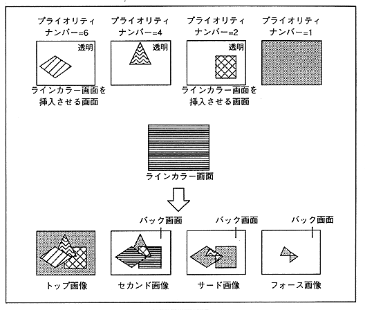
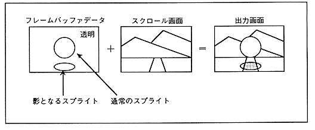

Figure 3.23 Shadow function

The blur calculation function is a function that adds color data in the horizontal direction of a specified screen at a fixed rate, and can produce an effect of blurring a distant background.